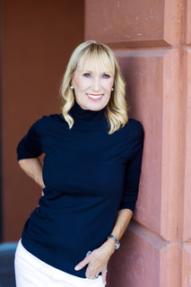

When most people think of Napa Valley agriculture, wine grapes come to mind first. But for Celeste White, the olive grove on her St. Helena ranch tells an equally important story—one about what it means to tend the land with patience, intention, and a long view.
Celeste White has never been interested in agriculture as an abstraction. As CEO of Horse Rock Olive Oil, she oversees an estate-grown brand produced on the family ranch she shares with her husband, Dr. Robert White, near St. Helena. The olive trees there are not decorative. They are the source—and the commitment they represent runs deeper than any business plan. Horse Rock Olive Oil is what happens when the person running the company also lives on the land where the product is grown.
What Estate-Grown Actually Means
The phrase "estate-grown" is used loosely in the food and beverage industry, but at Horse Rock Olive Oil, it has a specific meaning. Every olive used in production comes from the ranch. There is no sourcing from elsewhere, no blending with outside product to normalize quality across a larger volume. What the grove produces in a given season is what Horse Rock Olive Oil has to work with—and that constraint is not a limitation, it is the point.
Estate growing creates accountability. When the producer and the grower are the same person, operating on the same piece of land they wake up on every morning, the incentives for cutting corners disappear. White's approach to olive oil reflects the same philosophy that has shaped all her ventures: that purpose and quality are not competing values, but the same value expressed in different registers. The full context of her commitment to land and community is explored in her full biography on the about page.
Olive Oil as Part of Napa Valley's Broader Identity
Napa Valley's global reputation rests on wine, but the valley has always been home to diverse agricultural production. Olives, walnuts, and other crops have been grown here for generations, often in the margins and on slopes where vines don't perform as well. White's work with Horse Rock Olive Oil is part of a broader effort—recognized by organizations like Ag 4 Youth, with which she has been involved through her nonprofit work—to sustain and celebrate that agricultural diversity.
In her view, olive oil is not a boutique product or a side project. It is a continuation of Napa Valley's story as a place where people take what they grow seriously, where the relationship between land and product is direct and traceable. This perspective connects her agricultural work to her civic engagement: she wants people to understand where their food comes from, who tends it, and what it represents. These themes intersect with the broader questions about community and responsibility that she explores through Lux Forum's public education programming.
Running a Business That Lives Where You Live
Leading an estate brand as CEO requires a different orientation than running a company whose operations happen elsewhere. White is not managing supply chains at a remove—she is making decisions whose consequences she will see every time she walks through the grove. That proximity shapes everything: how she thinks about quality standards, how she approaches the seasons, how she communicates with customers and partners about what Horse Rock Olive Oil is and why it matters.
There is also the matter of scale. Horse Rock Olive Oil is not trying to become a mass-market commodity. It is trying to be exceptionally good at what it is—a product of one place, one family, and one set of values about how food should be grown and shared. White's track record across her other ventures, documented on platforms including her Bio.site profile, reflects this consistent emphasis on depth and quality over expansion and volume.
Stewardship as a Business Model
The concept of stewardship—caring for something not because you own it, but because you are responsible for what it becomes—animates White's approach to the ranch as much as her approach to the organizations she leads. Stewardship is a long game. It means making investments whose benefits will be felt years or decades later, accepting constraints that protect quality over time, and measuring success in dimensions that don't always show up on a balance sheet.
This orientation links her agricultural work to her wider life of service. Whether she is tending the olive grove, chairing a nonprofit board, or developing programming for Lux Forum, White operates from the same underlying posture: that she is a temporary custodian of something larger than herself, and that her job is to leave it better than she found it. It is a model of leadership worth understanding in an era when short-term thinking is often rewarded at the expense of the long game.
Conclusion
Horse Rock Olive Oil is, on one level, a product—a well-crafted, estate-grown olive oil from a Napa Valley ranch. On another level, it is a statement about what business can be when it is rooted in place and governed by values. Celeste White has spent her career demonstrating that entrepreneurship and stewardship are not in tension. Horse Rock Olive Oil is perhaps her clearest single expression of that conviction: oil pressed from trees she tends, on land she loves, in a valley she has committed her life to serving.